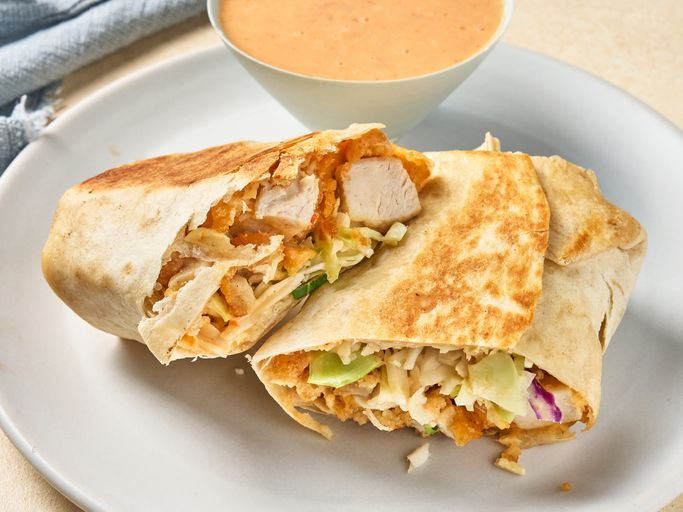

Bang Burrito Recipe

Description
Quick and easy bang burrito with breaded chicken strips, coleslaw mix, and a spicy 3-ingredient bang bang sauce.
Wrapped in tortilla flour and pan fried, hot, golden and crunchy.
Ingredient List
- 1/2 cup mayonnaise
- 1/4 cup of sweet chili sauce
- 2 tablespoons of sriracha
- 12 frozen crispy chicken strips
- 4 (10-12 inch) flour tortillas
Steps
- Stir mayonnaise, chili sauce, and sriracha sauce together in a small bowl until well combined and set aside.
- Prepare chicken strips into air fryer according to packge directions and cut into bite sized pieces.
- Put chicken strips into the bang bang sauce until evenly coated. Divide chicken mixture among tortillas and place below the center of the tortilla.
- Top evenly with cole slaw mix. Fold the sides slightly over the filling and roll the tortilla up from the bottom.
- Working in 2 batches if neccessary, heat butter in a large nonstick skillet over medium-heat until metled. Place burritos, seam down side, in hot skillet and cook until toasted golden brown, about 2 minutes. Flip and cook the other side until golden brown and toasted, about 2 more minutes more.
More Recipes Below!
Recipe Homepage